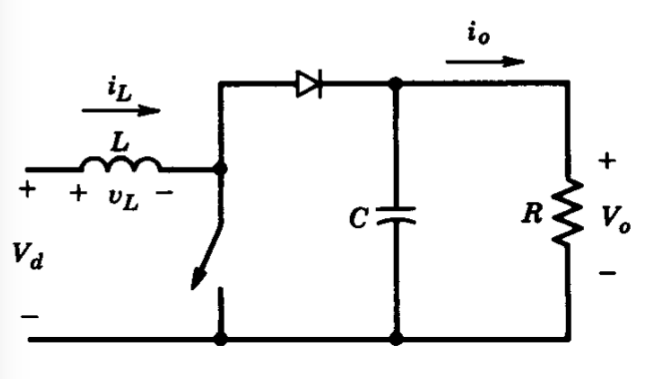
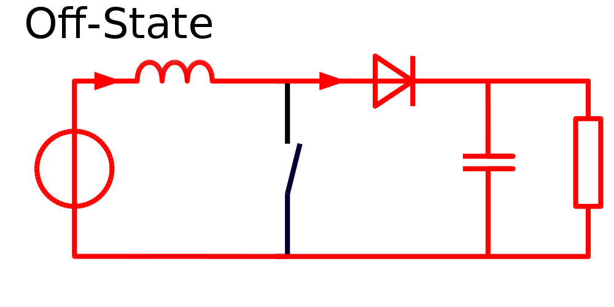
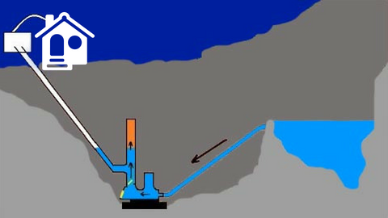
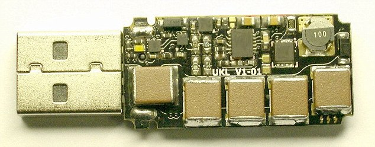
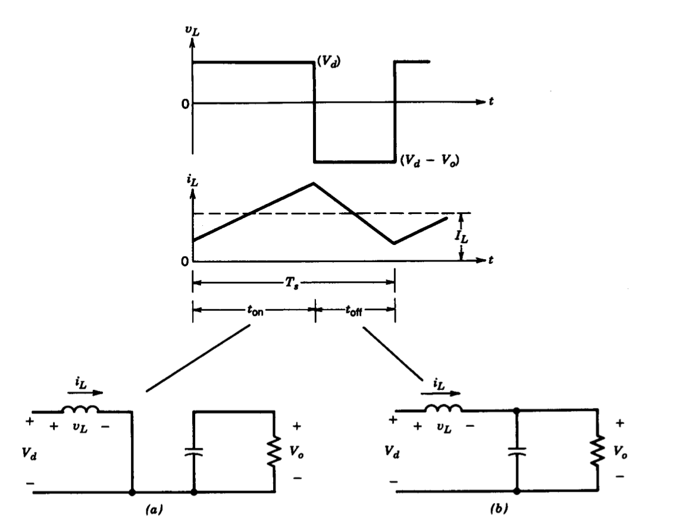
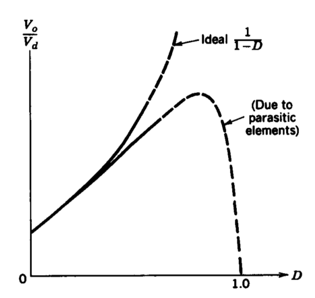

class: center, middle # EE-361 # (Step-Up) Boost Converters ## Ozan Keysan [ozan.keysan.me](http://ozan.keysan.me) Office: C-113 <span class="meta">•</span> Tel: 210 7586 --- # Step-Up (Boost) Converter --  --- # Step-Up (Boost) Converter ## Operating Modes: Switch ON (Diode OFF) -- <img src="./images/ee361/boost_on.png" alt="Drawing" style="width: 800px;"/> --- # Step-Up (Boost) Converter ## Operating Modes: Switch OFF (Diode ON) - --- ### Mechanical Analogy: Ram Pump - ### [How the ram pump works?](https://www.youtube.com/watch?v=i31hGJ93OTg), [How to make a ram pump](https://www.youtube.com/watch?v=0S2u_tdZkHs) ### [Largest ram pump](https://www.youtube.com/watch?v=pORYUjKoSuA) ### [Su Koçu nasıl yapılır?](https://www.youtube.com/watch?v=SJz14z51BkE), [Su koçu](https://www.youtube.com/watch?v=mFftIcH84Cg) --- ## USB Killer - ### [USB Killer](https://usbkill.com/), [USB Killer Tests](https://www.youtube.com/watch?v=zXMEeIRAa_g) ### [USB Killer Explained](https://coloured-cable-ties-6.blogspot.com/2019/03/usb-killers-explained.html?m=0), [Protection against USB Killer](https://www.bourns.com/docs/technical-documents/technical-library/circuit-protection/publications/how-to-protect-mobile-devices-from-usb-kill-threats-white-paper.pdf?sfvrsn=89227ff6_12) --- # Step-Up (Boost) Converter -- ## Can you plot the voltage & current waveforms? -- ## Can you find the relation between \\(V_o\\) and \\(V_d\\)? -- ## [Plexim Simulation](https://www.plexim.com/academy/power-electronics/boost-conv) --- # Step-Up (Boost) Converter --  --- # Step-Up (Boost) Converter -- ## \\(V\_d t\_{on} + (V\_d-V\_o)t\_{off}=0\\) -- ## \\( \dfrac{V\_o}{V\_d} = \dfrac{T\_s}{t\_{off}} = \dfrac{1}{1-D} \\) -- ## \\( \dfrac{I\_o}{I\_d} = (1-D) \\) --- # Ideal vs. Reality -- ### What is Vo as D goes to 1? #### \\( \dfrac{V\_o}{V\_d} = \dfrac{T\_s}{t\_{off}} = \dfrac{1}{1-D} \\) --  --- ## Summary - ## Buck Converters can be used to step-down DC voltage - ## Boost Converters can be used to step-up DC voltage. --- ## EE463 & EE464 <img src="http://legendsrevealed.com/entertainment/wp-content/uploads/2015/10/future-continued.jpg" alt="Drawing" style="width: 350px;"/> - ## AC/DC Converters (Rectifiers) - ## DC/DC Converters - ## Switched Mode Power Supplies (SMPS) - ## DC/AC Converters (Inverters) --- ## You can download this presentation from: [keysan.me/ee361](http://keysan.me/ee361)